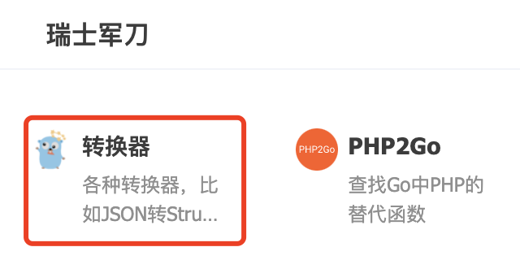
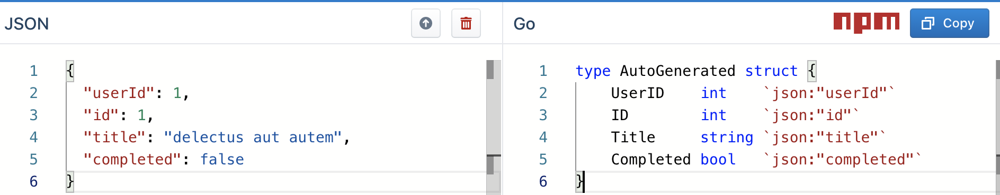
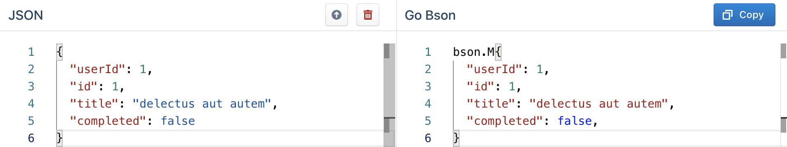
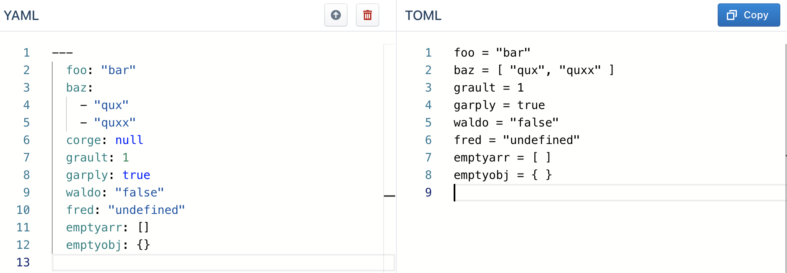

程序员瑞士军刀：各种结构的转换工具
大家好，我是 polarisxu。
上次推荐的 「Go网址导航」，其中收录了一项：转换器。

这是一个开源项目，项目地址：https://github.com/ritz078/transform，目前 Star 数 2.8k+。
这个网站将转换工具分成了几类：
- SVG
- HTML
- JSON
- JSON Schema
- CSS
- JavaScript
- GraphQL
- JSON-LD
- TypeScript
- Flow
- Others
其中有一些对 Gopher 比较有用，这里简单列举介绍下。
01 Go 相关
JSON 几乎每个程序员都会用到。在 Go 语言中，会有哪些场景会用到这里 JSON 相关工具呢？
1）转为 struct
这是一个很常见的场景，目前也存在很多在线工具，支持 JSON 转为 struct，而且我没记错的话，GoLand 自带将 JSON 转为 struct。
transform 里也有这样的工具：https://transform.tools/json-to-go

在左边改动 JSON，右边会实时显示出对应的 struct。
此外，顶部的向上箭头，是导入文件，支持从本地导入和远程 URL 导入。
2）转为 BSON
如果你存储使用的是 MongoDB，会使用到 BSON。不过 JSON 到 BSON 转换几乎不太需要借助工具。
BSON 是一种类 JSON 的一种二进制形式的存储格式，简称 Binary JSON，它和 JSON 一样，支持内嵌的文档对象和数组对象，但是 BSON 有 JSON 没有的一些数据类型，如 Date 和 BinData 类型。BSON 可以做为网络数据交换的一种存储形式，这个有点类似于 Google 的 Protocol Buffer，但是 BSON 是一种 schema-less 的存储形式，它的优点是灵活性高，但它的缺点是空间利用率不是很理想，BSON有 三个特点：轻量性、可遍历性、高效性。
所以，BSON 看起来和 JSON 是一样的。

02 其他配置文件相关
目前常用的配置文件有：yaml、toml、json、xml 等，它们直接是可以直接转换的。这个网站就提供了相关工具，将一种格式转为另一种格式。
比如讲 yaml 转为 toml（我喜欢的文件类型）：

03 总结
好的工具可以提升开发速度，我们要善于使用工具。当然，有能力，你也可以自己生产工具。有好工具记得分享，让更多人知晓、使用。